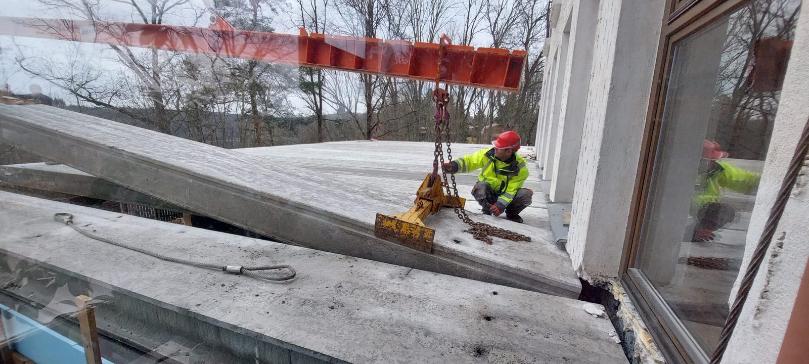
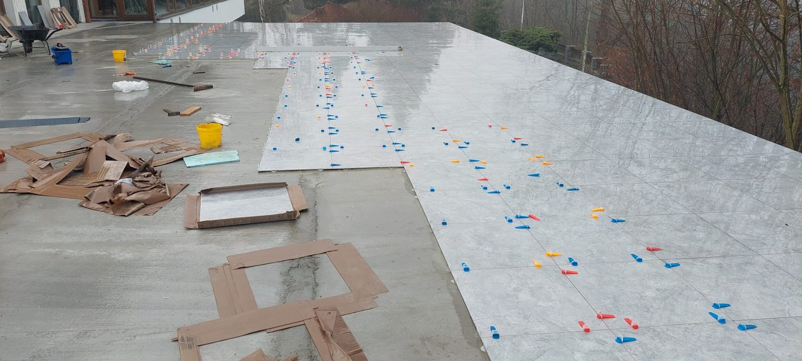
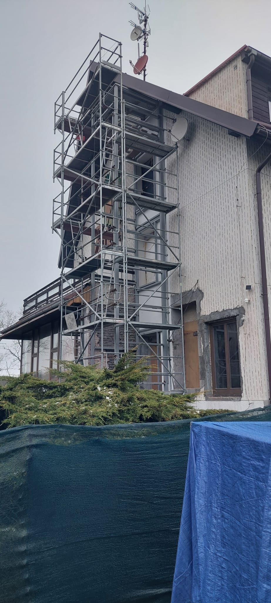
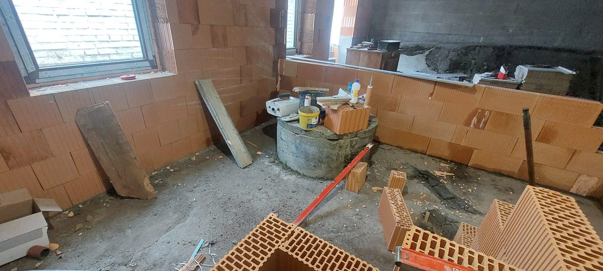
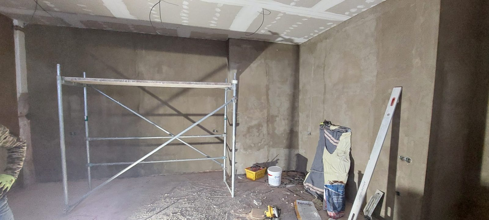
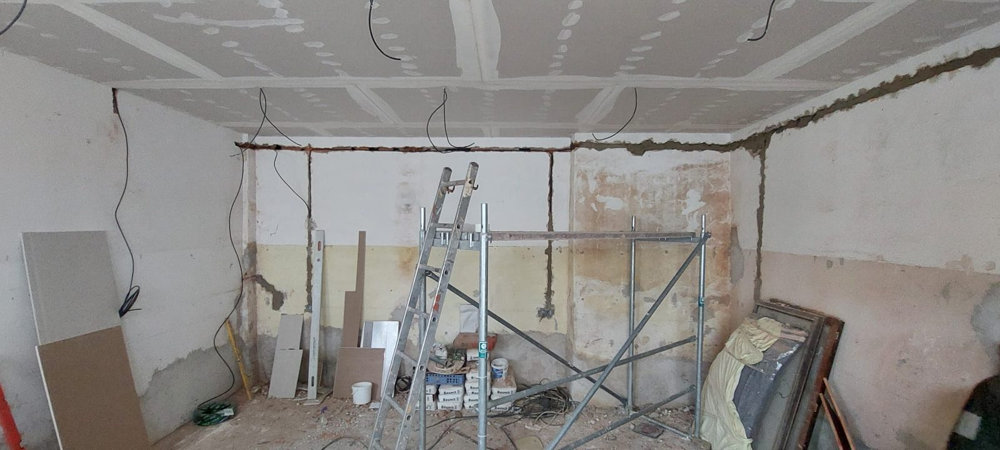

Výběr z realizovaných zakázek — od hrubé stavby po dokončené interiéry a terasy. Fotografie postupně doplňujeme dalšími realizacemi.

Osazení stropní panelové konstrukce terasy jeřábem v rámci přestavby rodinného domu.

Terasová dlažba kladená na rektifikační terče pro spádovaný, provětrávaný povrch.

Hotová terasa s výhledem do okolní krajiny, těsně před předáním.

Rekonstrukce bazénové haly rodinného domu včetně nových oken a povrchů.

Lešení pro opravu fasády a komínového tělesa vícepodlažního domu.

Vyzdívání nosných a příčkových stěn z keramických tvárnic v hrubé stavbě.

Strojní omítky stěn a sádrokartonový podhled připravené na malbu.

Otlučené omítky a probourané otvory před novými rozvody a příčkami.

Pokládka nové dlažby v bytě po odstranění staré podlahové krytiny.